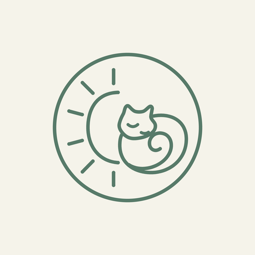

Find your rhythm.
Choose a 25- or 45-minute focus session, then take a break. Follow your total focus time, streak, and weekly activity.

Purr FlowFocus · Unwind · Feel at home
Make space for work, study, and winding down. A Pomodoro timer, calming sounds, and your own cozy cat companion.
Currently awaiting App Store review. Store links will be added when available.
Choose a 25- or 45-minute focus session, then take a break. Follow your total focus time, streak, and weekly activity.
Set a 30-minute sleep timer with rain or cat purring. Sounds fade out when time is up, without an end-of-timer alarm.
Name your cat and earn items for your corner by completing focus sessions. No hungry pets. No guilt for taking a break.
No account required. No ads in the current app. Your focus history and cat customization stay on your device.
An optional paid subscription unlocks 60- and 90-minute focus sessions, Strict Mode, longer sleep timers, all five cat coats, all sounds, three-sound mixing, saved mixes, and detailed focus history. Premium items also require focus milestones.
Plus offers weekly, monthly, and three-month auto-renewing plans. Prices and any eligible trial are shown in the app before purchase. Manage or cancel through your store account. Purr Flow is a sleep timer, not a sleep tracker; it does not measure sleep duration or quality.